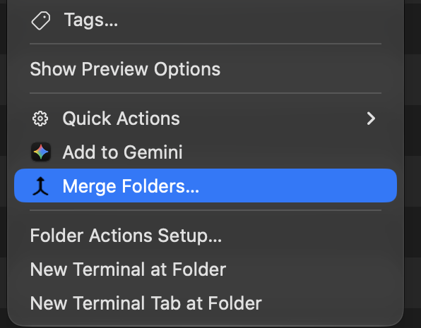
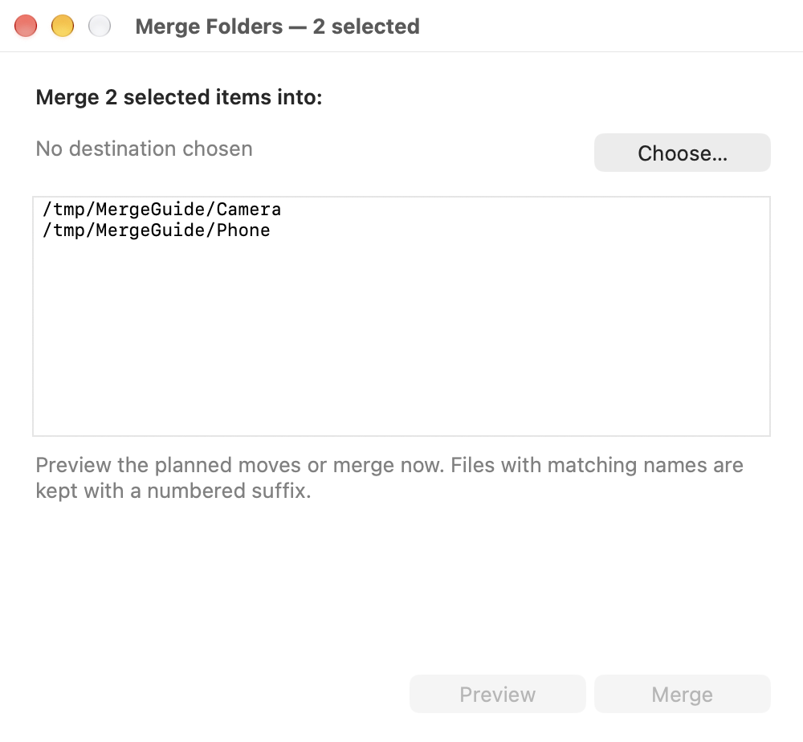
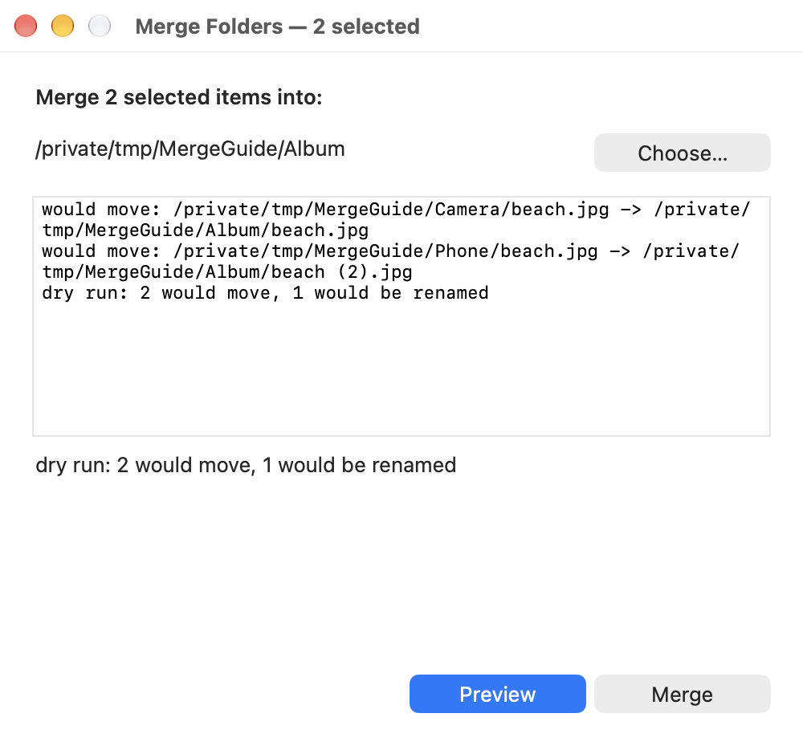
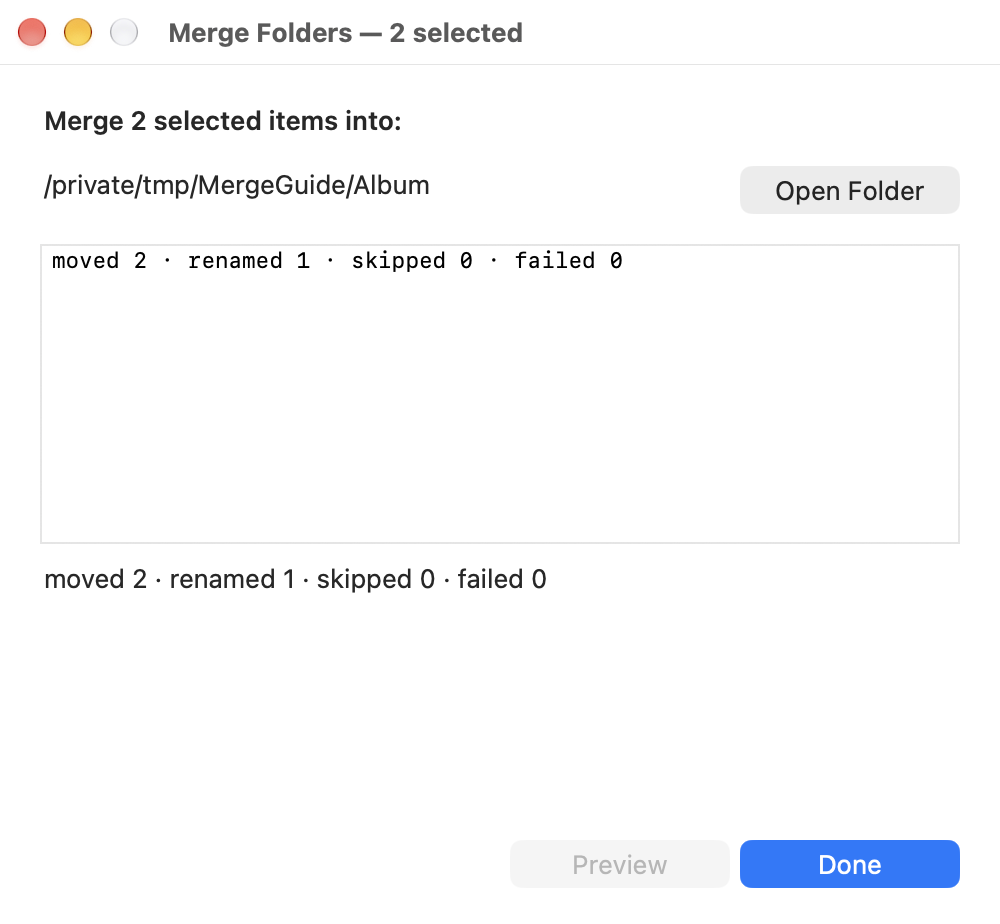

An open-source macOS utility
Many folders.
One home.
Bring folders together from Finder or Terminal. Preview each move and keep both files when names match.
Install Merge FoldersInstall on Mac
Requires macOS 13 or later. Runs on Apple silicon and Intel Macs.
Ready-made app
Download MergeFolders-<version>.zip, unzip it, and move MergeFolders.app to Applications. If macOS says the app cannot be verified, open System Settings → Privacy & Security and click Open Anyway.
Homebrew (Terminal only)
brew install Davin-X/tap/mergefoldersFrom source
Download and unzip the source. In Terminal, type cd followed by a space, drag the extracted folder into the window, and press Return. Building the Finder app needs write access to /Applications and Apple’s Command Line Tools (xcode-select --install).
./install.sh # Finder and Terminal
./install.sh --cli-only # Terminal onlyUse Finder
- Enable the menu. In System Settings, search for Extensions. Enable Merge Folders under Finder Extensions.
- Select your sources. Command-click folders or files in Finder, right-click the selection, and choose Merge Folders….

- Choose the destination. In the example below, Camera and Phone are listed; click Choose… to select or create the Album folder.

- Preview the names. Click Preview. The last planned path ends in
beach (2).jpg, so both photos will be kept. The dry run leaves the sources in place.
- Merge and inspect the result. Click Merge. In this example the summary reports two files moved, one renamed, and zero failures. Click Open Folder to see both photos, Undo Merge to put every file back, or Done to close the window.



Try Terminal
1. Preview with sample files
Paste this into Terminal to create two disposable note.txt files and preview their destinations.
demo=$(mktemp -d)
mkdir -p "$demo/First" "$demo/Second" "$demo/Merged"
printf 'first copy\n' > "$demo/First/note.txt"
printf 'second copy\n' > "$demo/Second/note.txt"
~/bin/mergefolders --dry-run --to "$demo/Merged" \
"$demo/First" "$demo/Second"2. Run the merge
Perform the moves and list the merged folder:
~/bin/mergefolders --to "$demo/Merged" \
"$demo/First" "$demo/Second"
ls "$demo/Merged"Output shows note.txt and note (2).txt. Use --keep to keep empty source folders, or --help for all options.
Common questions
Where is the Finder menu?
Open MergeFolders from Applications and click Open Finder Extensions. Enable Merge Folders, reopen the Finder window, then right-click selected items.
Can I undo a merge?
Yes. After a merge, click Undo Merge, or run mergefolders --undo in Terminal. Each file moves back to where it was, including after a cancelled or partly failed merge. Files you deleted or replaced since the merge are reported and left alone. Preview first and keep a backup of important files.
What about links or cloud files?
Download cloud-only files first. Symbolic links move as links. A relative link can resolve differently in its new location.
How do I update or uninstall?
Opening the app from Applications tells you when a newer release exists. To update, replace the app with the one from the latest release, run brew upgrade mergefolders, or rerun the installer from new source. To uninstall, disable the Finder extension, quit Merge Folders, and run:
pluginkit -r "/Applications/MergeFolders.app/Contents/PlugIns/MergeFoldersExt.appex"Move MergeFolders.app to the Trash. Remove the CLI with rm -i "$HOME/bin/mergefolders".